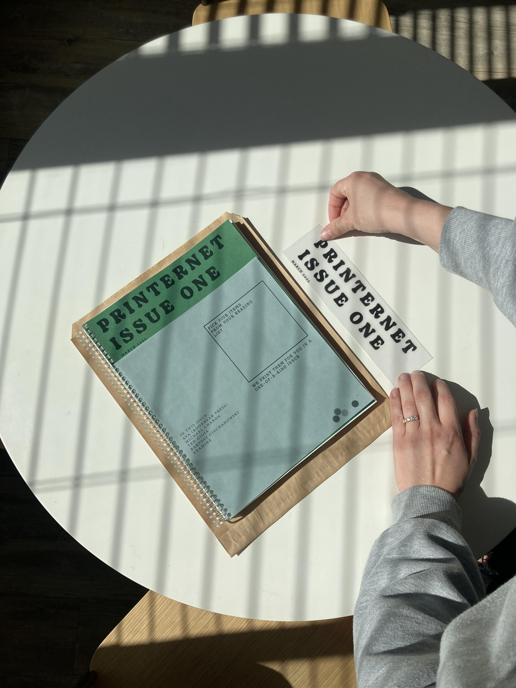
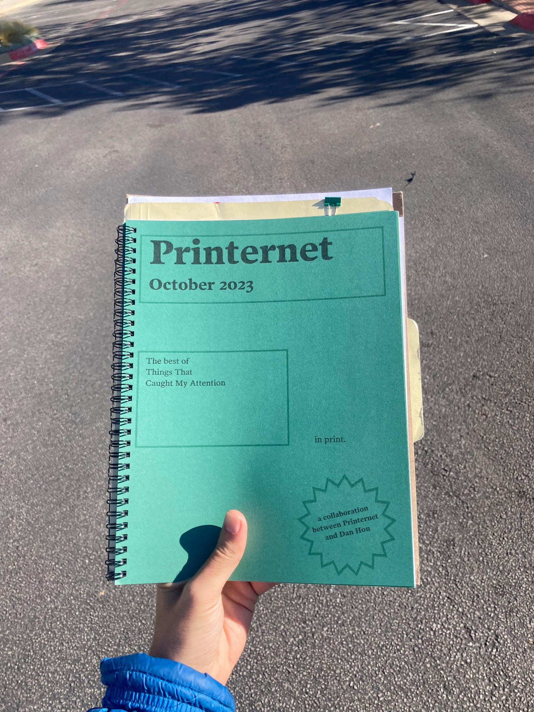
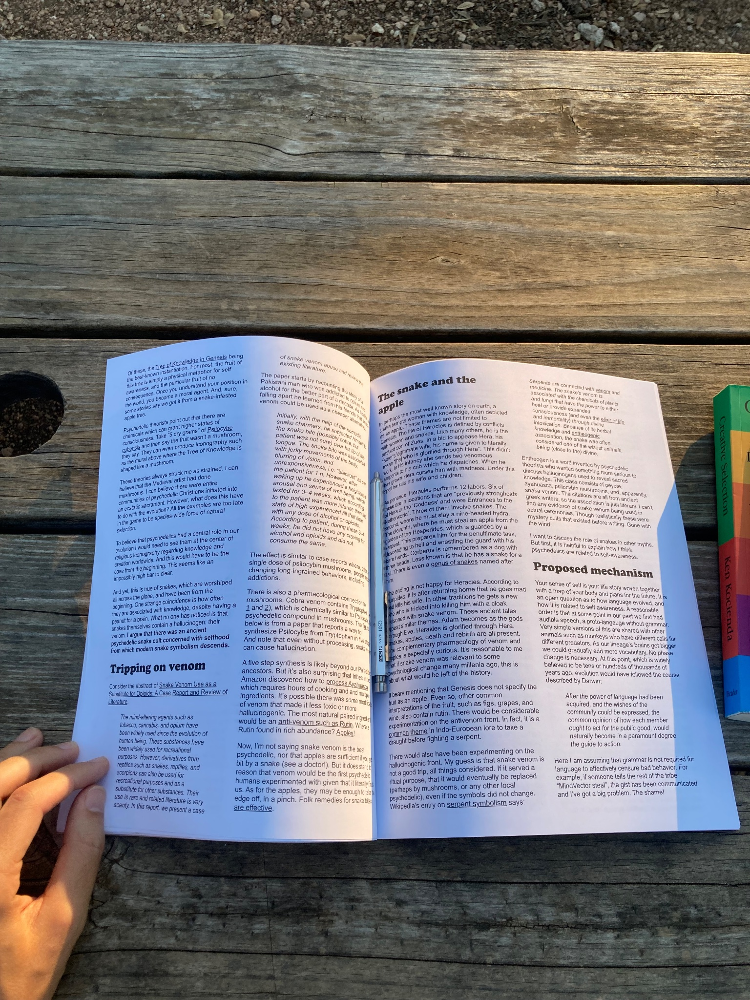
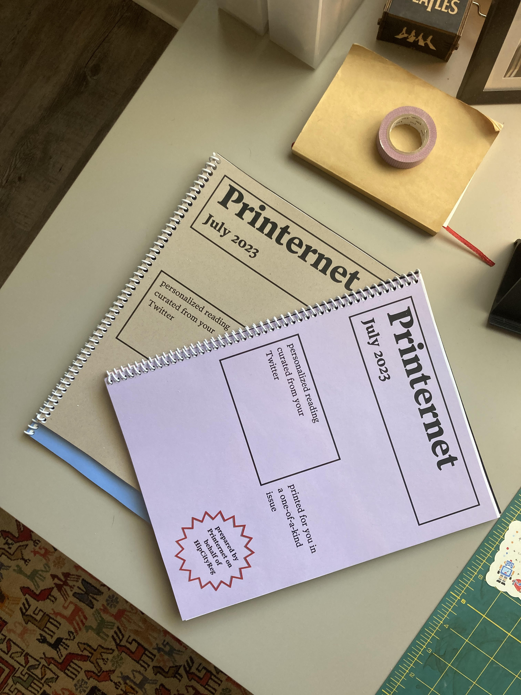
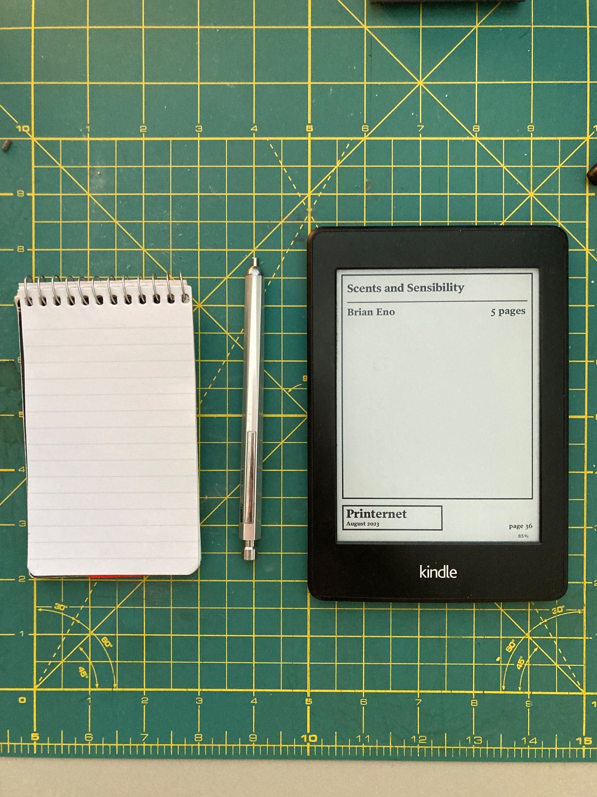
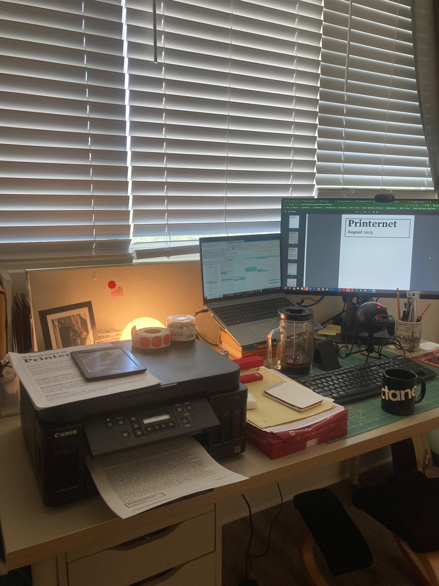

writing
Working notes on Printernet
A public record of what's been done and what might be done with my project Printernet.
published on 10.28.23jake weber
What is Printernet?
First let's state clearly what Printernet is. Printernet lets you turn your favorite writing from the internet into a print subscription. It is a beautiful magazine that lets you decide what ought to be in it. So much of today's best writing is happening on the internet. Why should it be trapped on screens? If I want to read wonderful writing in print, why should I have to choose between what various editorial boards like Wired and the New Yorker think I should read? Of course they will publish great writing (I love them both) but there is so much more writing that I love that would never appear in their issues. Printernet lets you mix and match the reading you are interested in and mails them to you each month in a professional, personal, print issue.


History
I thought of this idea in early 2022. I'd gotten into the habit of printing saved reading and stapling them together. I found the experience of reading on paper so much better than reading at my desk or on my iPhone. Taking notes was easier, the various pieces interacted in cool ways when physically close to one another, I could mark where I left off and return later, my eyes didn't hurt, and I was less distracted reading in print. I wondered if other people did this, found some whispering from others that indicated they did, and decided to test the idea. I launched the MVP in May 2022. I shared in on Twitter, Product Hunt, and put up a Squarespace where you could (and still can) order an issue. The first available option had a form at check out where you could paste the five URLs you wanted in your issue. I received some encouragement and people expressed their excitement about the core idea early on. Eashan (@eashankotha on Twitter) was the first person to buy a Printernet issue and therefore also the first person to give me money on the internet. Thanks Eashan!
In the later half of 2022 I began using Bubble to build a no-code web application for Printernet readers that aimed to make it easier for them to store interesting reading they came across online and make it easier for them to build their next issue. I applied to YC S22 and was rejected. I got the web app up and running but abandoned it after realizing it was wasted effort. I hadn't received enough users or feedback to justify that work. And more crucially, I hadn't been told that anyone even wanted it. In 2022 I received a handful of orders and that made me quite happy.
In late 2022 / early 2023 I had an idea for a new Printernet option. This was in response to some feedback about people wanting to order a Printernet issue but not knowing quite what they wanted in it. In other words they were having a hard time picking interesting reading. To address this, I came up with the Printernet x Social option. This allows readers to give me their Twitter or Substack profile and allow Printernet to pick reading for them based on their interests, follow list, and favorite newsletters. This got a ton of excitement and Printernet orders surged.
In mid to late 2023 I began work on a new web application for Printernet readers. This time I had feedback to justify it. I'd been asked about subscriptions and the increase in orders required some new automation and workflow changes. I am still working on v1 of this new web app, but functionally it is already working great and I am personally using it every day.
In October 2023, Dan Hon reached out about collaborating with Printernet. Dan has been writing Things That Caught My Attention for nearly a decade and was interested in offering his readers a physical print version of his writing. After some great conversations, Dan picked 6 pieces for his first issue and I spun up a private link for it. Five minutes after Dan emailed his readers the link, we got the first order for this collaborative issue. It also happened to be Printernet's first UK reader.
If you're interested in providing your readers with a physical print version of your writing, I'd love to help. Email me and we can chat!


Design
Early on I wanted Printernet to emphaszie the text of the articles or essays included in each issue. This was partly in response to the overwhelming nature of reading online. All those ads, share links, comments, likes, and images were distraction. I've used various "readability" tools for a while and wanted a similar simplified layout in each Printernet issue. Because of this, Printernet removes everything but the central text of each reading item. Images, links, and footnotes are appended to the end of each issue as QR codes. Soon, a single QR code will accompany each piece of reading which links to a section of the web app where readers can view all the images, links and footnotes in one organized place.
Each reading item starts with a title page (giving the title of the reading item and the writer, as well as the page count). Each reading item ends with a blank page for notes as well as a page of QR codes to any images, links, or footnotes from the original piece. We also include a QR code to the original URL of the piece.
Engineering
The first 6 months or so, I created each issue manually using In Design (and later Canva). This worked, but was extremely tediuous. I would manually copy and paste the original text from each URL and then paste it into my In Design or Canva file.
In response to hating my life while working on each issue, I began writing a Python script to assist in issue creation. The Python code is a web scraping tool utilizing the Beautiful Soup library. At first, I would paste a single URL from a reader's order into the Python script and manually run it. It would then grab the HTML from the URL and remove certain (unwanted) elements like images, ads, comment sections, etc. This helped a lot but was still a bit arduous. I then created a text file within the Python repl where I could paste all 5 URLs from a user's order and redesigned the Python script to grab each URL sequentially and output five individual cleaned up files. This was better. I then added the code required to also create a "combined file" output which would append each of the five reading items in one file. Most recently, I've created an API endpoint using node.js with express that can recieve the five links from the new web app when a user hits "Get Issue". The five URLs are then sent into the Python repl and it starts running automatically. Once all the cleaned up "Printernet ready" files are created and a combined file is made, the last step of the Python code emails the final file to Printernet's email address. I then simply need to print it out. This is FANTASTIC and working quite well. I use it for my own Printernet issues twice a week. There is more work to be done here (see to-dos below) but this has dramatically reduced the time it takes me to make each issue.
The core features of the new web app are:
- A queue of all the interesting reading you stumble on while online. You can manually add, name, and remove items from your reading queue. You can also move an item from your queue to your "Next Issue".
- A "Next Issue" queue representing the five reading items you'd like in your next monthly issue. You can remove an item from your Next Issue and kick it back to your general queue. You can also add a "Printernet picks!" placeholder as one (or many) of your reading items for your next issue if you'd like a recommendation from Printernet for that reading item. When your issue looks good, you can hit the "Get Issue" button to place your order.
- A Chrome Extension that lets you right-click on any link and add it to your Printernet reading queue. This makes it rediculously easy to add interesting reading to your Printernet queue. This has already replaced my use of Matter for collecting reading I want to get to.
- Subscription options. You can select 1 issue per month, 2 issues per month, or simply enter payment info for one-off purchases whenever you want a new issue.
The web application uses plain HTML, CSS, and JS for the frontend. It uses node.js with express for the backend. It uses AWS for the databases. It is entirely built and hosted on Replit.
The new web app is nearly ready for our first group of users. If you are interested in using Printernet and turning your favorite writing into a beautiful and personalized print issue, email me. If you'd like to order an issue right now, you can do so here.
Updates
There are two very awesome announcements I can't make quite yet regarding Printernet, so this is me cryptically not-announcing them to satisfy the urge to let the cats out of the bag and establishing this section for future updates.


To-dos
For now I am excluding the various to-dos that have already been completed since I covered the history and current state above. This list represents the work to be done and moving forward I will keep a record of what is completed.
- Finalize the subscription options and make sure the Stripe stuff is working.
- Improve the Chrome Extension's vibe.
- Fix the Chrome Extension's intermittent "need to click twice" bug. This is related to Manifest v3 "Active" background script stuff I think.
- Stop showing login prompts on Chrome Extension when session is still active.
- Ensure login / auth / password storing stuff is secure and following "best practices".
- Ensure protected routes are functioning.
- Add social login options.
- Add "Send to Kindle" free option.
comments